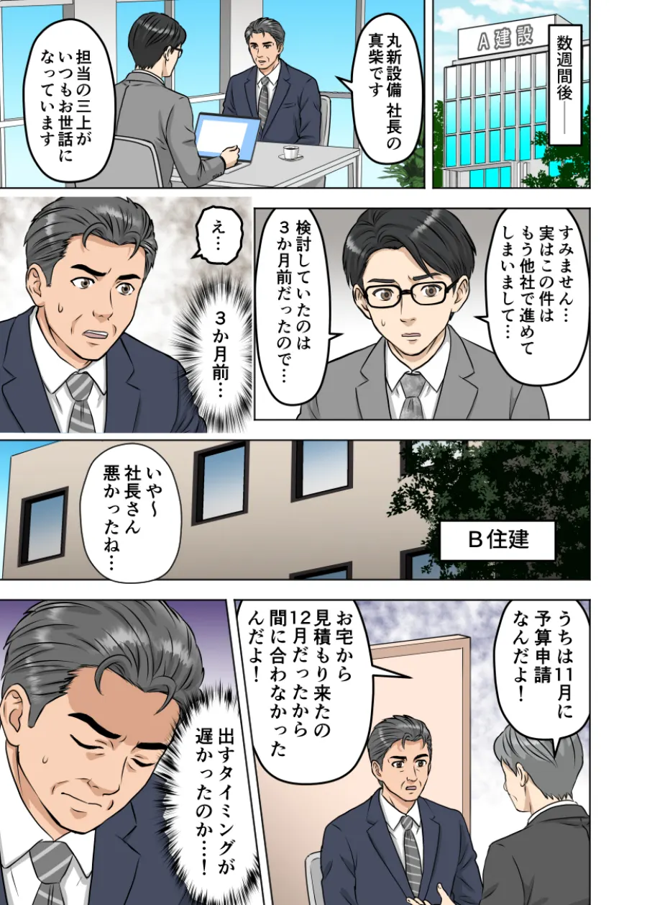
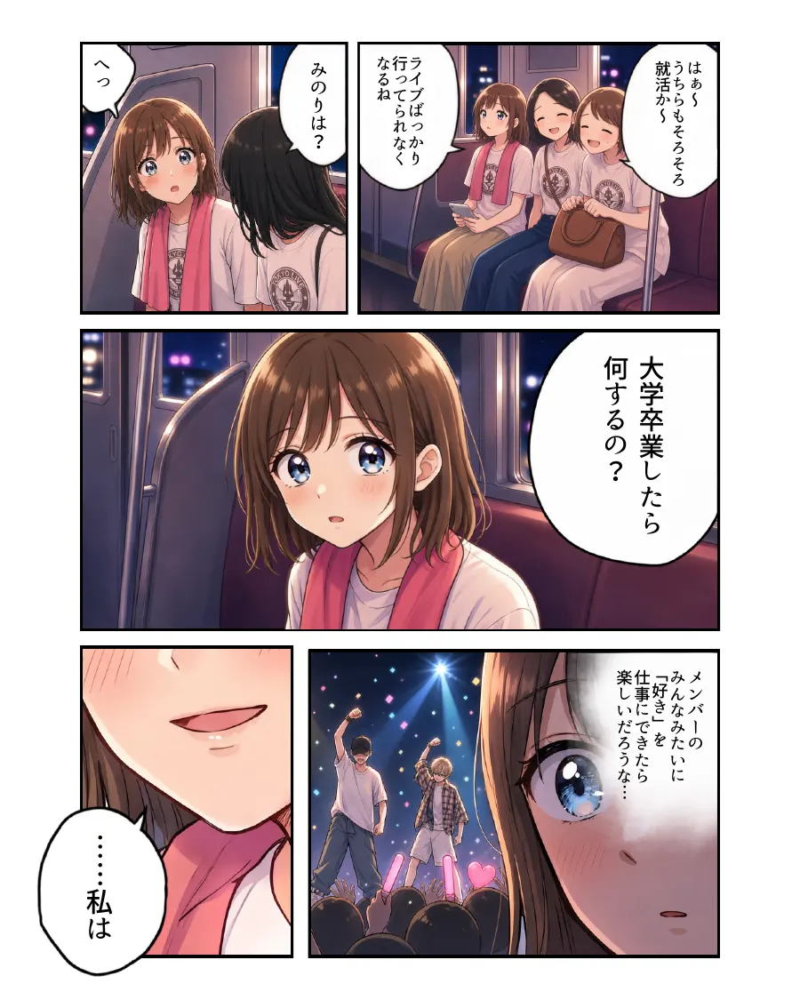
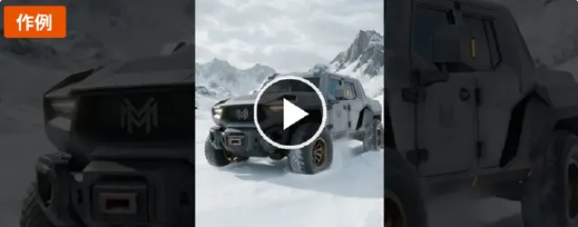
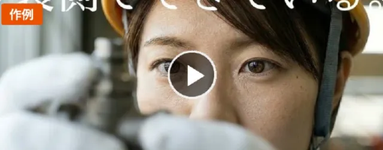

営業
決裁者まで、物語のまま届く。
提案資料・Web・メールに添えると、商品やサービスを使ったあとの変化を、商談の前に読んでもらえます。担当者から上司、決裁者へ、内容がそのまま伝わります。
マンガ・アニメ・映像の制作
BIZ STORY — STORY × BRAND
企業の想いも、商品の良さも、働く人の魅力も。ビズストーリーは、マンガ・アニメ・映像の力で、商品やサービスを使ったあとの変化をわかりやすく伝え、企業の営業・マーケティング・採用を支援します。
SERVICES
ビズストーリーは、伝える相手と場面に合わせて選べる3つのサービスです。
企画から仕上げまで、目的に合わせたコンテンツを制作します。
 01
BIZ MANGA
ビズマンガ
使ったあとの変化を、読むだけで先に体験する。
ビズマンガについて詳しく
02
BIZ ANIME
ビズアニメ
まだ知らない人に、30秒で価値を伝える。
ビズアニメについて詳しく
01
BIZ MANGA
ビズマンガ
使ったあとの変化を、読むだけで先に体験する。
ビズマンガについて詳しく
02
BIZ ANIME
ビズアニメ
まだ知らない人に、30秒で価値を伝える。
ビズアニメについて詳しく
 03
BIZ VIDEO
ビズビデオ
何ができるのかを、1〜2分で見せる。
ビズビデオについて詳しく
03
BIZ VIDEO
ビズビデオ
何ができるのかを、1〜2分で見せる。
ビズビデオについて詳しく
WHY STORY
人は説明ではなく、共感で動く。
難しい話も、物語にすればスッと届く。
どれだけ想いを込めた文章でも、読まれなければ届かない。絵と物語なら、最後まで読み進め、見てもらえます。
専門的なサービスや導入後の変化を、物語や映像で具体的に伝えられます。読む人が、自社で使う場面をイメージできます。
感情が動いた物語は、あとで思い出してもらえます。担当者だけでなく、上司や決裁者にも同じ内容をわかりやすく共有できます。
SOLUTION
文章では届かない想いも、
ビズストーリーで物語にできる！
SERVICE 01ビズマンガ
BIZ MANGA
導入前の悩みから導入後の変化までを物語で描き、読む人が自社で使う場面を具体的にイメージできるようにします。

営業
提案資料・Web・メールに添えると、商品やサービスを使ったあとの変化を、商談の前に読んでもらえます。担当者から上司、決裁者へ、内容がそのまま伝わります。

採用
「先輩社員の1日」「初めての配属」「初めての成功体験」。求職者は登場人物に自分を重ねて、入社後の自分を具体的にイメージできます。

資産
納品時には全データの著作権・利用権をクライアントへ譲渡。Web・印刷物・SNS・動画まで、1作品を追加費用なしであらゆる用途へ展開できます。
SERVICE 02ビズアニメ
BIZ ANIME
AI動画技術 × クリエイターの演出力で、広告・VTuber・MV・IPまで。
アイデアを、動くコンテンツへ。

広告・SNS
サービスを使う場面とその後の変化を短いアニメーションで伝え、広告やSNSで興味喚起につなげます。

キャラクター・IP
キャラクターデザインや世界観づくりを含め、ゼロからの立ち上げに対応しています。既存IPをお持ちの場合は、その世界観を活かした展開も可能です。

配信
配信面（SNS・広告枠・サイネージ等）に合わせて、比率・尺・テンポを設計します。媒体、尺、世界観に合わせて、最適な映像表現を組み立てます。
COMBINATIONビズマンガ × ビズアニメ
FROM MANGA TO ANIME
まずマンガで物語とキャラクターをつくり、同じ世界観のままアニメへ。
1つの物語で、伝える場所を広げられます。
営業資料・採用ページ・ホームページで、じっくり読んでもらう。
動きと音が加わり、短い時間でも印象に残る。
まだ知らない人に届く入口から、1つの物語を使い続ける。
CASE STUDY
マンガで描いた物語をもとに、アニメの制作まで展開しました。
MANGAマンガ
ANIMEアニメ
SERVICE 03ビズビデオ
BIZ VIDEO
商品やサービスの動き、使い方、導入後の様子を短い映像で伝えます。
リアルな映像で、ビジネスを動かす。

商品・サービスのCM
雪山や荒野、砂漠、海外の街並みまで。撮影車両や海外ロケなしで、商品の世界観を描けます。

採用・会社紹介
整備や空港の仕事、測量と現場の手仕事。働く人の表情と現場の空気を、短い映像で伝えます。

VLOG・SNS
観光PRや商品PRに。スマホ向けの縦型画面にも対応し、続きが見たくなる短編をつくれます。
※ 画像は作例です。登場する人物は、AIで生成した架空の人物です。
CASE STUDIES
カードをタップすると、その場でマンガを読んだり、動画を再生したりできます。
※ 掲載作品は、ビズビデオで描ける表現の幅をお示しするための作例です。特定企業の受注実績や、実在する商品・ブランドとの関係を示すものではありません。
※ 登場する人物は、AIで生成した架空の人物です。配信時は、掲載先に合わせてAI生成である旨の表示をご案内します。
※ 美容室の採用動画（前編・後編）は構成の作例です。実際の採用動画では、社員ご本人の声や写真を使います。
PROCESS
制作体制と、活用までを見据えた伴走を両立します。
目的やターゲットを整理し、最適な企画をご提案します。
伝える内容をシナリオや絵コンテにまとめます。
マンガ・アニメ・映像を制作します。
公開後の活用方法までサポートします。
ABOUT US
Contents X は、マンガ・アニメ・映像の企画制作と、制作スタジオ・マンガスクールの運営、オリジナル作品（IP）の企画開発を行っています。
TO BE CONTINUED — WITH YOU
企画段階からでもお気軽にご相談ください。利用するサービスが決まっていなくても構いません。目的やご予算に合わせて、最適なご提案をいたします。